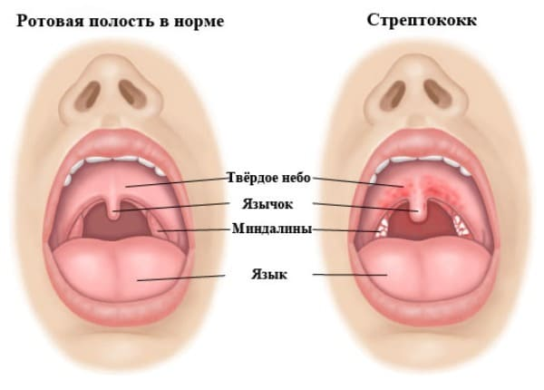

Боль в горле — частая жалоба. Как правило, инфекция при этом поражает не само горло; оно просто болит при обычном гриппе, ангине, ОРЗ. Ниже мы даем свои рекомендации по диагностике и лечению заболеваний носоглотки.
ПРИЧИНЫ
ОРВИ. Горло болит, как правило, при ОРВИ и гриппе. Само горло не обязательно будет красным, но боль может быть довольно сильной.
Специфические инфекции горла. Некоторые вирусы поражают именно горло, вызывая увеличение лимфатических узлов, миндалин, покраснение и боль в горле. Часто встречается вирусный афтозный стоматит. Самый распространенный из таких вирусов — вирус Коксаки, который может служить причиной появления изъязвлений по всей полости рта и маленьких пузырьков на руках и ногах.
Стрептококковая ангина. Это классическое бактериальное заболевание горла. На небе зачастую появляются темно-красные точки, миндалины отечны, красные с белым налетом, лимфатические узлы увеличены. Важно лечить стрептококковую ангину антибиотиками, чтобы избежать осложнений.
Тонзиллит. Иногда миндалины могут быть инфицированы другими типами бактерий, помимо стрептококков, что приводит к их покраснению, увеличению и появлению белого налета. Тонзиллит также лечится антибиотиками.
Аллергии. Известно, что аллергии могут быть причиной воспаления горла у детей. При этом также может наблюдаться зуд. Если у вашего ребенка хроническая боль в горле, но у него нет симптомов каких-либо болезней, это может оказаться аллергией .
Ларингит. Он, как правило, вызывается вирусной инфекцией голосовых связок и горла .
КОГДА ОБРАЩАТЬСЯ К ВРАЧУ
Главный вопрос, на который необходимо ответить родителям и врачам, когда ребенок жалуется на больное горло, — является ли это следствием стрептококковой инфекции или нет. Если эту болезнь не лечить, стрептококк может поразить сердце и почки и вызвать некоторые очень серьезные осложнения. К счастью, это происходит довольно редко, даже если стрептококковую инфекцию не лечить. Чтобы подстраховаться и ускорить выздоровление, при стрептококковой инфекции необходим курс антибиотиков. Другие бактериальные причины боли в горле не нужно лечить.

СОВЕТ ДОКТОРОВ СИРС: БОЛЬ В ГОРЛЕ ПО УТРАМ Боль в горле при нестрептококковых ангинах сильнее по утрам и уменьшается в течение дня. Если ваш ребенок просыпается с болью в горле, дайте ему попить и начинайте день как обычно, прежде чем оценить его реальное самочувствие. Если это стрептококковая инфекция, ребенку не станет легче. Если это вирусное или неинфекционное заболевание, ребенок, возможно, будет меньше жаловаться, когда начнет заниматься привычными делами. |
Стрептококковая ангина. Вот признаки, указывающие на необходимость визита к врачу:
Если ваш врач заподозрил стрептококковую ангину, он может взять мазок из горла для анализа.
Вирусная инфекция. Если у вашего ребенка наблюдаются следующие симптомы, у него, возможно, ОРВИ, и ему не надо посещать врача:
Если вы не уверены в оценке состояния ребенка или обеспокоены, лучше отвести ребенка на обследование к врачу.
ЛЕЧЕНИЕ
Неважно, является ли инфекция вирусной или бактериальной, как правило, требуется обезболивание.
Вот несколько эффективных способов облегчить боль в горле вашего ребенка:
Здоровье ребенка от докторов Сирс / Сирс У. и др.